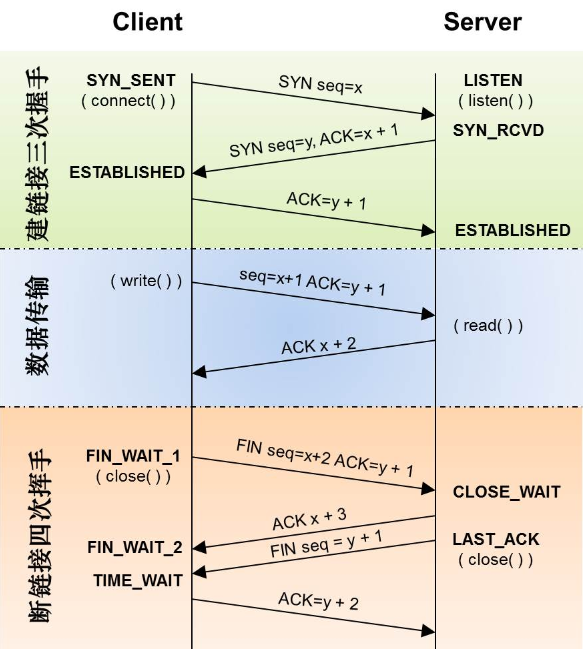

一、TCP 状态转换图
概念
- SYN: (同步序列编号，Synchronize Sequence Numbers)
- ACK: (确认编号，Acknowledgement Number)
- FIN: (结束标志，FINish)

二、状态说明
CLOSED
表示初始状态。
LISTEN
表示服务器端的某个 socket 处于监听状态，可以接受连接。
SYN_SEND
在服务端监听后，客户端 socket 执行 connect 时，客户端发送 SYN 报文，此时客户端就进入 SYN_SENT 状态，等待服务端的确认。也就是TCP三次握手中的第1步之后，注意是客户端状态。
1 | sysctl -w net.ipv4.tcp_syn_retries = 2 |
做为客户端可以设置 SYN 包的重试次数，默认 5 次（大约180s）引用校长的话：仅仅重试 2 次，现代网络够了。
SYN_RCVD
表示服务端接受到了SYN报文，在正常情况下，这个状态是服务器端的 socket 在建立TCP连接时的三次握手会话过程中的一个中间状态，很短暂，基本上用 netstat 你是很难看到这种状态的，除非你特意写了一个客户端测试程序，故意将三次TCP握手过程中最后一个 ACK 报文不予发送。因此这种状态时，当收到客户端的 ACK 报文后，它会进入到 ESTABLISHED 状态。
注意是服务端状态，一般 15 个左右正常，如果很大，怀疑遭受 SYN_FLOOD 攻击。
1 | sysctl -w net.ipv4.tcp_max_syn_backlog=4096 |
设置该状态的等待队列数，默认1024，调大后可适当防止syn-flood，可参见man 7 tcp
sysctl -w net.ipv4.tcp_syncookies=1 , 打开syncookie，在 syn backlog 队列不足的时候，提供一种机制临时将syn链接换出。
sysctl -w net.ipv4.tcp_synack_retries = 2 ,做为服务端返回 ACK 包的重试次数，默认 5 次（大约180s）引用校长的话：仅仅重试2次，现代网络够了
ESTABLISHED
客户端接受到服务端的 ACK 包后的状态，服务端在发出 ACK 在一定时间后即为 ESTABLISHED。
sysctl -w net.ipv4.tcp_keepalive_time = 1200 ，默认为7200秒(2小时)，系统针对空闲链接会进行心跳检查，如果超过net.ipv4.tcp_keepalive_probes * net.ipv4.tcp_keepalive_intvl = 默认11分，终止对应的tcp链接，可适当调整心跳检查频率
目前线上的监控 waring:600 , critial : 800
FIN_WAIT_1
这个是已经建立连接之后，其中一方请求终止连接，等待对方的FIN报文。FIN_WAIT_1状态是当 socket 在 ESTABLISHED 状态时，它想主动关闭连接，向对方发送了 FIN 报文，此时该 socket 即进入到 FIN_WAIT_1 状态。而当对方回应 ACK 报文后，则进入到 FIN_WAIT_2 状态，当然在实际的正常情况下，无论对方何种情况下，都应该马上回应ACK报文，所以 FIN_WAIT_1 状态一般是比较难见到的，而 FIN_WAIT_2 状态还有时常常可以用 netstat 看到。也是在TCP四次握手的第1步。
CLOSE_WAIT
这种状态的含义其实是表示在等待关闭。怎么理解呢？
当对方 close 一个 socket 后发送 FIN 报文给你，你系统毫无疑问地会回应一个 ACK 报文给对方，此时则进入到 CLOSE_WAIT 状态。接下来呢，实际上你真正需要考虑的事情是察看你是否还有数据发送给对方，如果没有的话，那么你也就可以 close 这个 socket，发
送 FIN 报文给对方，也即关闭连接。所以你在 CLOSE_WAIT 状态下，需要完成的事情是等待你去关闭连接。
FIN_WAIT_2
主动关闭的一方，在接受到被动关闭一方的ACK后，也就是TCP四次握手的第2步。
sysctl -w net.ipv4.tcp_fin_timeout=30, 可以设定被动关闭方返回FIN后的超时时间，有效回收链接，避免syn-flood.
LASK_ACK
被动关闭的一方，在发送 ACK 后，被动一方 close socket 时，会再发起一个FIN请求，在等待主动关闭方的 ACK 时就是 LASK_ACK 状态。当收到 ACK 后也即可以进入到 CLOSED 可用状态了。
TIME_WAIT
主动关闭的一方，在收到被动关闭的FIN包后，发送ACK。也就是TCP四次握手的第4步。
sysctl -w net.ipv4.tcp_tw_recycle = 1 , 打开快速回收 TIME_WAIT，Enabling this option is not recommended since this causes problems when working with NAT (Network Address Translation)
sysctl -w net.ipv4.tcp_tw_reuse =1, 快速回收并重用TIME_WAIT的链接, 貌似和tw_recycle有冲突，不能重用就回收?
net.ipv4.tcp_max_tw_buckets: 处于time_wait状态的最多链接数，默认为180000.